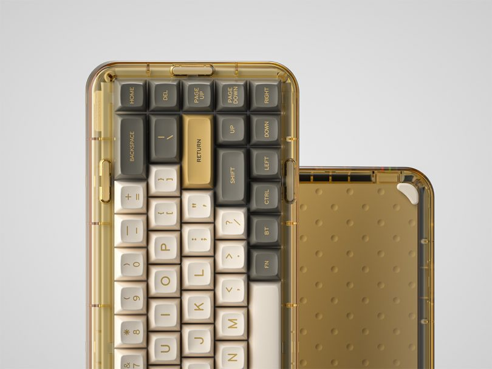
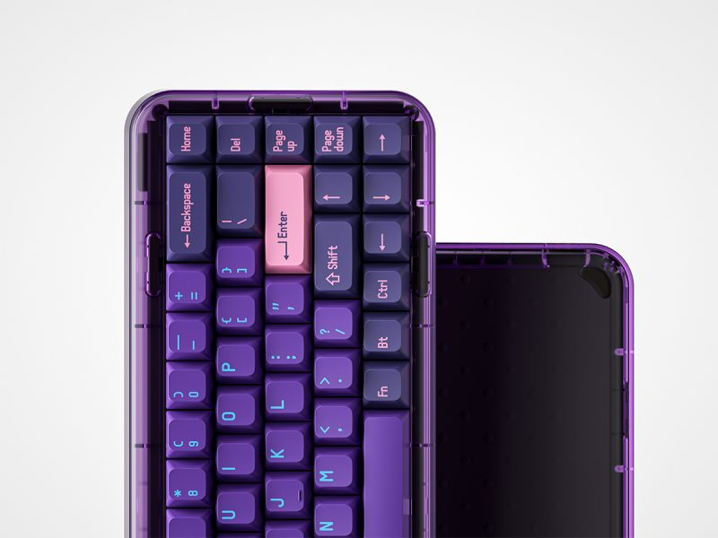
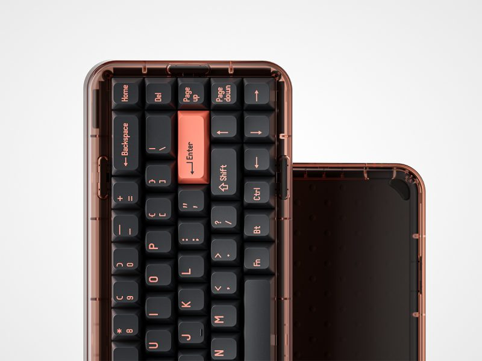
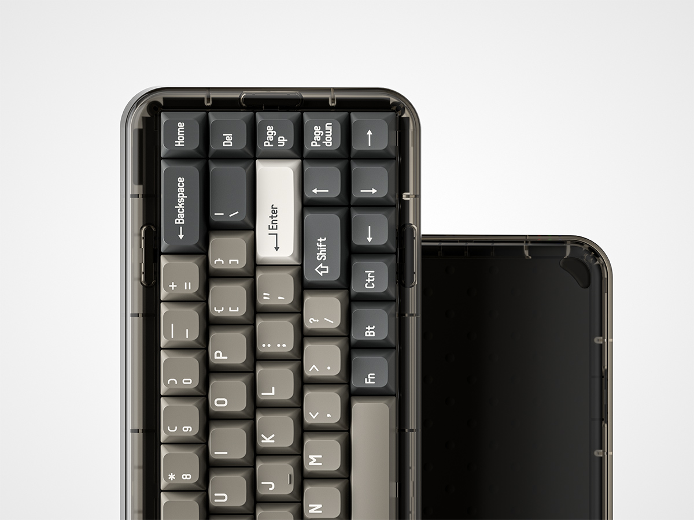
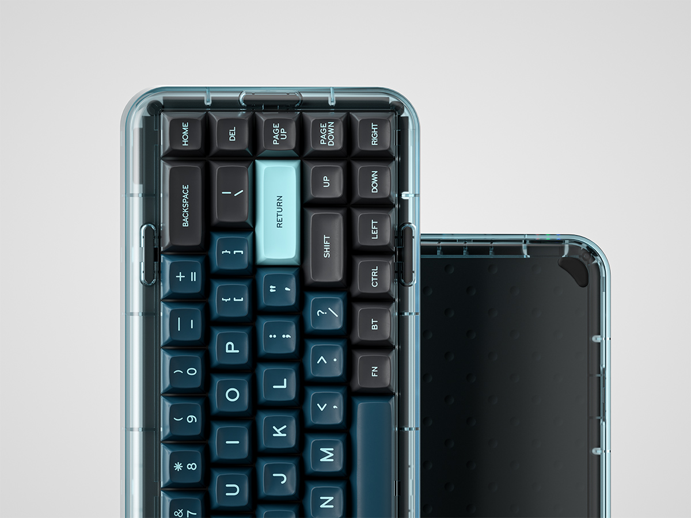
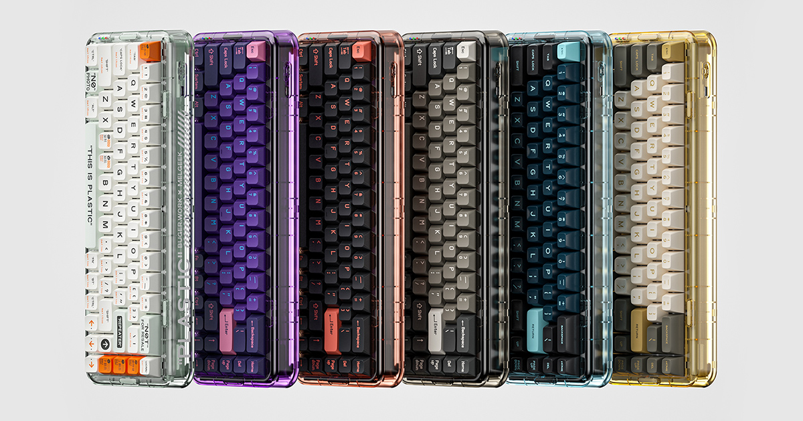

Shades of Off-White Transparently Influence Mojo68 Mechanical KeybRd
by KEYBRD Team

Mechanical keyboards continue to evolve from purely functional throwback tech accessories to increasingly fashionable and fun interpretations of yesterday’s input devices. If you need any further proof of this throwback trend, just steer your attention toward these 6 colorfully styled programmable mechanical keyboard by MelGeek embellished with the stylings any hypebeast would instantly recognize.


It’s clearly evident Virgil Abloh’s Off-White characteristic typographic-supergraphic styling had an influence upon one of MelGeek’s Mojo68 series of mechanical keyboards. All the tell-tale signifiers of Abloh’s industrial-iconography is there to see emblazoned across the Mojo68 clear edition. The only detail missing is a zip-tie.


But in its other colorful iterations, the color-tinted clear keyboards are more subdued, each allowing a degree of customizability with a choice of 3 different profile keycaps and 5 types of switches to hone in the specific sound and tactile preferences (switch options include Speed Silver and Blueish White from TTC or Gateron Brown, Blue and Yellow). And because many of us continue to work from home, why not just go with the most clicky-audible option for now?



MelGeek is currently crowdfunding the series via Kickstarter, with pricing dependent upon the colorway/styling. Pigeon, Neon and Retro are the most affordable of the six ($169), with Ember, Monster and Plastic editions adding a $30 premium for $199.

No matter the exterior color and styling, each Mojo68 is internally the same, with hot-swappable keys, RGB LEDs, gasket mount layout, the ability to connect up to four different devices, and both Mac and Windows compatible.